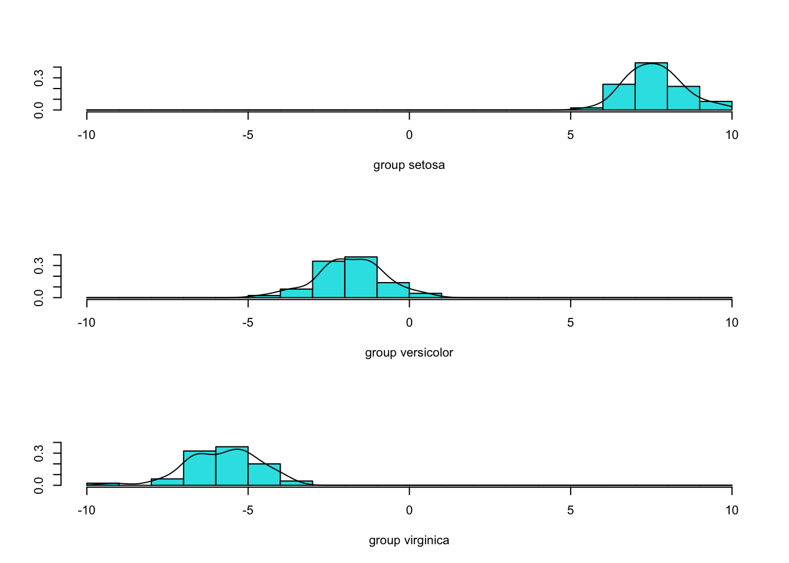
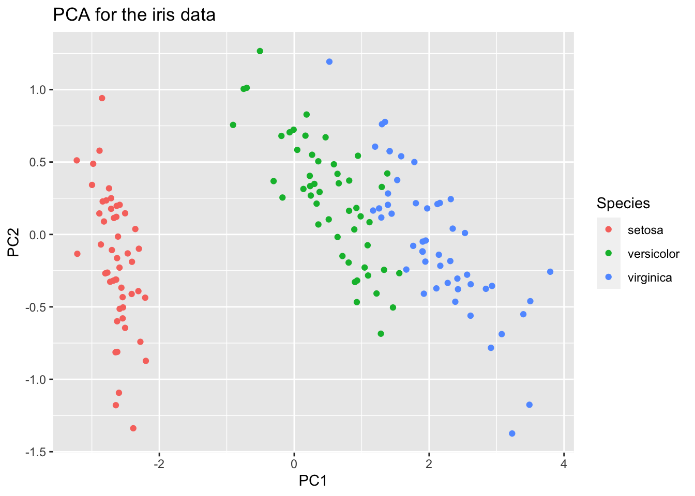
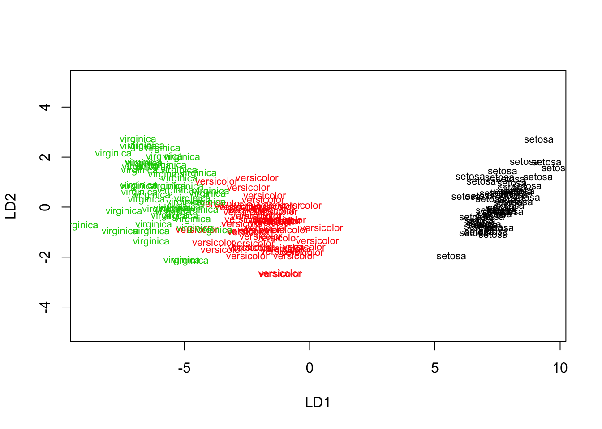
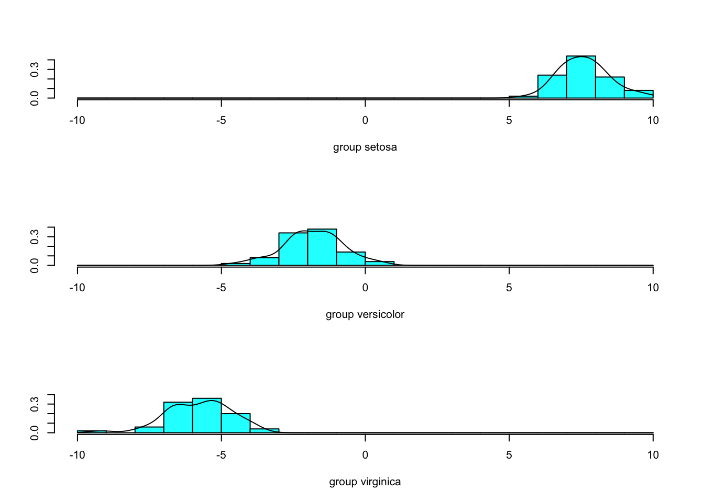

1.4 Fisher’s linear discriminant rule
Thus far we have assumed that observations from population \(\Pi_j\) have a \(N_p ( \boldsymbol{\mu}_j, {\mathbf \Sigma})\) distribution, and then used the MVN log-likelihood to derive the discriminant functions \(\delta_j(\mathbf x)\). The famous statistician R. A. Fisher took an alternative approach and looked for a linear discriminant functions without assuming any particular distribution for each population \(\Pi_j\).
This way of thinking leads to a form of dimension reduction. We find a projection of the data into a lower dimensional space that is optimal for classifying the data into the different populations.
Variance decomposition
Suppose we have a training sample \(\mathbf x_{1,j}, \ldots, \mathbf x_{n_j,j}\) from \(\Pi_j\) for \(j=1,\ldots,g\). Fisher’s approach starts by splitting the total covariance matrix of the data (i.e. ignoring class labels) into two parts.
\[\begin{align*} n\mathbf S=\mathbf X^\top\mathbf H\mathbf X&= \sum_{j=1}^g\sum_{i=1}^{n_j} (\mathbf x_{i,j} - \bar{\mathbf x})(\mathbf x_{i,j} - \bar{\mathbf x})^\top\\ &=\sum_{j=1}^g\sum_{i=1}^{n_j} (\mathbf x_{i,j} - \hat{{\boldsymbol{\mu}}}_j+\hat{{\boldsymbol{\mu}}}_j-\bar{\mathbf x})(\mathbf x_{i,j} - \hat{{\boldsymbol{\mu}}}_j+\hat{{\boldsymbol{\mu}}}_j-\bar{\mathbf x})^\top\\ &= \sum_{j=1}^g\sum_{i=1}^{n_j} (\mathbf x_{i,j} - \hat{{\boldsymbol{\mu}}}_j)(\mathbf x_{i,j} - \hat{{\boldsymbol{\mu}}}_j)^\top+ \sum_{j=1}^g n_j (\hat{{\boldsymbol{\mu}}}_j-\bar{\mathbf x})(\hat{{\boldsymbol{\mu}}}_j-\bar{\mathbf x})^\top\\ &=n\mathbf W+n\mathbf B \end{align*}\] where \(\hat{{\boldsymbol{\mu}}}_j=\frac{1}{n_j} \sum \mathbf x_{i,j} = \bar{\mathbf x}_{+,j}\) is the sample mean of the \(j\)th group, \(\bar{\mathbf x} = \frac{1}{n} \sum_{j=1}^g \sum_{i=1}^{n_j} \mathbf x_{ij}\) is the overall mean, and \(n=\sum_{j=1}^g n_j\).
This has split the total covariance matrix into a within-class covariance matrix \[ \mathbf W= \frac{1}{n}\sum_{j=1}^g \sum_{i=1}^{n_j} (\mathbf x_{ij} - \hat{{\boldsymbol{\mu}}}_j) (\mathbf x_{ij} - \hat{{\boldsymbol{\mu}}}_j)^\top = \frac{1}{n}\sum_{j=1}^g n_j \mathbf S_j \] and a between-class covariance matrix \[ \mathbf B= \frac{1}{n}\sum_{j=1}^g n_j (\hat{{\boldsymbol{\mu}}}_j - \bar{\mathbf x}) (\hat{{\boldsymbol{\mu}}}_j - \bar{\mathbf x})^\top\] i.e. \[\mathbf S= \mathbf W+ \mathbf B.\]
\(\mathbf W\) is an estimator of \(\boldsymbol{\Sigma}\), the shared covariance matrix in the MVN distributions for each population (c.f. Equation. (1.4)).
If \(\mathbf M\) is a \(n \times p\) matrix of estimated class centroids for each observation \[\mathbf M= \begin{pmatrix} -& \hat{{\boldsymbol{\mu}}}_1 &-\\ &\vdots &\\ -& \hat{{\boldsymbol{\mu}}}_1 &-\\ -& \hat{{\boldsymbol{\mu}}}_2 &-\\ &\vdots&\\ -& \hat{{\boldsymbol{\mu}}}_g &-\\ &\vdots &\\ -& \hat{{\boldsymbol{\mu}}}_g &-\end{pmatrix}\] then \(\mathbf B=\frac{1}{n}\mathbf M^\top\mathbf H\mathbf M\) is the covariance matrix of \(\mathbf M\).
Fisher’s criterion
Fisher’s approach was to find a projection of the data \(z_i = \mathbf a^\top \mathbf x_i\) or \[\mathbf z= \mathbf X\mathbf a\] in vector form, that maximizes the between-class variance relative to the within-class variance.
Using the variance decomposition from above, we can see that the total variance of \(\mathbf z\) is \[\begin{align*} \frac{1}{n}\mathbf z^\top \mathbf H\mathbf z&= \frac{1}{n}\mathbf a^\top \mathbf X^\top\mathbf H\mathbf X\mathbf a\\ &= \mathbf a^\top \mathbf S\mathbf a\\ &= \mathbf a^\top\mathbf W\mathbf a+ \mathbf a^\top\mathbf B\mathbf a\\ \end{align*}\] which we have decomposed into the within-class variance of \(\mathbf z\) and the between-class variance \(\mathbf z\).
Fisher’s criterion is to choose a vector, \(\mathbf a\), to maximise the ratio of the between-class variance relative to the within-class variance of \(\mathbf z=\mathbf X\mathbf a\), i.e., to solve \[\begin{equation} \max_{\mathbf a}\frac{\mathbf a^\top \mathbf B\mathbf a}{\mathbf a^\top \mathbf W\mathbf a}, \tag{1.5} \end{equation}\]
The idea is that this choice of \(\mathbf a\) will make the classes most easily separable.
Solving the optimization problem
How do we solve the optimization problem (1.5) and find the optimal choice of \(\mathbf a\)?
Proof. Firstly, note that an equivalent optimization problem is
\[\begin{align*} \mbox{Maximize } &\mathbf a^\top \mathbf B\mathbf a\\ \mbox{ subject to } &\mathbf a^\top \mathbf W\mathbf a=1 \end{align*}\]
as we can rescale \(\mathbf a\) without changing the objective (1.5). This looks a lot like the optimization problems we saw in the chapters on PCA and CCA.
To solve this, note that if we write \(\mathbf b=\mathbf W^{\frac{1}{2}}\mathbf a\) then the optimization problem becomes
\[\begin{align*} \mbox{Maximize } &\mathbf b^\top \mathbf W^{-\frac{1}{2}}\mathbf B\mathbf W^{-\frac{1}{2}}\mathbf b\\ \mbox{ subject to } &\mathbf b^\top \mathbf b=1. \end{align*}\] Proposition ?? tells us that the maximum is obtained when \(\mathbf b=\mathbf v_1\), where \(\mathbf v_1\) is the eigenvector of \(\mathbf W^{-\frac{1}{2}}\mathbf B\mathbf W^{-\frac{1}{2}}\) corresponding to the largest eigenvalue of \(\mathbf W^{-\frac{1}{2}}\mathbf B\mathbf W^{-\frac{1}{2}}\), \(\lambda_1\) say.
Converting back to \(\mathbf a\) gives the solution to the original optimization problem (1.5) to be \[\mathbf a= \mathbf W^{-\frac{1}{2}}\mathbf v_1\]
Note that this is an eigenvalue of \(\mathbf W^{-1}\mathbf B\)
\[\begin{align*} \mathbf W^{-1}\mathbf B\mathbf a&= \mathbf W^{-1}\mathbf B\mathbf W^{-\frac{1}{2}}\mathbf v_1 \\ &= \mathbf W^{-\frac{1}{2}}\mathbf W^{-\frac{1}{2}}\mathbf B\mathbf W^{-\frac{1}{2}}\mathbf v_1\\ &= \lambda_1\mathbf W^{-\frac{1}{2}}\mathbf v_1\\ &= \lambda_1 \mathbf a \end{align*}\]
Finally, to complete the proof we should check that \(\mathbf W^{-1}\mathbf B\) doesn’t have any larger eigenvalues, but we can do this by showing that its eigenvalues are the same as the eigenvalues of \(\mathbf W^{-\frac{1}{2}}\mathbf B\mathbf W^{-\frac{1}{2}}\). This is left as an exercise (note we’ve already done one direction - all you need to do is show that if \(\mathbf W^{-1}\mathbf B\) has eigenvalue \(\lambda\) then so does \(\mathbf W^{-\frac{1}{2}}\mathbf B\mathbf W^{-\frac{1}{2}}\)).
Fisher’s discriminant rule
The function \(L(\mathbf x)=\mathbf a^\top \mathbf x\) is called Fisher’s linear discriminant function. Once \(L(\mathbf x)\) has been obtained, we allocate \(\mathbf x\) to the population \(\Pi_k\) whose discriminant score \(L(\hat{{\boldsymbol{\mu}}}_k)\) is closest to \(L(\mathbf x)\), that is, we use the discriminant rule \[ d^{Fisher}(\mathbf x) = \arg \min_k |L(\mathbf x) - L({\boldsymbol{\mu}}_k)| = \arg \min_k | \mathbf a^\top \mathbf x- \mathbf a^\top \hat{{\boldsymbol{\mu}}}_k |. \] If there are only two populations (and suppose \(L({\boldsymbol{\mu}}_1)> L({\boldsymbol{\mu}}_2)\)), this is equivalent to classifying to population 1 if \(L(\mathbf x)>t\) and to population 2 otherwise, where \(t = \frac{1}{2}(L({\boldsymbol{\mu}}_1)+L({\boldsymbol{\mu}}_2))\).
This is visualized in Figure 1.6 for the iris data. The black points are the setosa data, and the green the viriginica. The diagonal black line is in the direction \(\mathbf a\). Along that line we have plotted the projection of the data points onto the line (\(\mathbf x^\top \mathbf a\)), with the mean of each population and their projections marked with \(+\). The red line is perpendicular to \(\mathbf a\), and joins the midpoint of the two population means, \(\mathbf h= \frac{\hat{{\boldsymbol{\mu}}}_s+\hat{{\boldsymbol{\mu}}}_v}{2}\), with the projection of that point onto \(\mathbf a\). The red diamond marks the decision boundary for the projected points, i.e., if the point is to the left of this we classify as setosa, otherwise viriginica. It is half way between the projection of the two population means.
In Figure 1.6 \(\mathbf a\) is chosen to be Fisher’s optimal vector (the first eigenvector of \(\mathbf W^{-1}\mathbf B\)). This is the projection that is optimal for maximizing the ratio of the between-group to within-group variance, i.e., it optimally separates the two populations in the projection. In Figure 1.7 \(\mathbf a\) is instead chosen to be the first principal component, i.e., the first eigenvector of the covariance matrix. This is the projection that maximizes the variance of the projected points (as done in PCA). Note that this is different to the LDA projection, and does not separate the two populations as cleanly as the LDA projection did.

Figure 1.6: Visualization of Fishers discriminant analysis.

Figure 1.7: Projection onto the first principal component.
Multiple projections
To summarize what we’ve found so far, we have seen that the vector \(\mathbf a\) which maximizes \[\frac{\mathbf a^\top \mathbf B}{\mathbf a^\top \mathbf W\mathbf a} \] is the first eigenvector of \(\mathbf W^{-1}\mathbf B\). As we did with PCA and CCA, we can continue and find a second, third, etc projection of the data. We’re not going to go through the details of the derivation, but we can consider the projection matrix \[\mathbf A= \begin{pmatrix}|& \ldots &|\\ \mathbf a_1 & \ldots & \mathbf a_r\\ |& \ldots &| \end{pmatrix}\] which has columns equal to the first \(r\) eigenvectors of \(\mathbf W^{-1}\mathbf B\).
Recall that \[\mathbf B= \frac{1}{n}\sum_{j=1}^g n_j (\hat{{\boldsymbol{\mu}}}_j - \bar{\mathbf x}) (\hat{{\boldsymbol{\mu}}}_j - \bar{\mathbf x})^\top\] is the variance of the \(g\) population means. The points \(\hat{{\boldsymbol{\mu}}}_j - \bar{\mathbf x}\) lie in a \(g-1\) dimensional subspace of \(\mathbb{R}^p\) (they must sum to \(\boldsymbol 0\)), and so \(\mathbf B\) and also \(\mathbf W^{-1}\mathbf B\) has rank at most \(\min(g-1,p)\). Thus we can find at most \(\min(g-1,p)\) projections of the data for maximizing the separation between the classes.
To classify points using \(r\) different projections, we use the vector discriminant function
\[\bL(\mathbf x) = \mathbf A^\top \mathbf x\] and use the discriminant rule \[d^{Fisher}(\mathbf x) = \arg \min_k ||\bL(\mathbf x) - \bL({\boldsymbol{\mu}}_k)||_2,\] i.e., we compute the \(r\) dimensional projection of the data and then find the which (projected) population mean it is closest to.
Note the dimension reduction here. We have gone from an observation \(\mathbf x\in \mathcal{R}^p\) to a projected point \(\mathbf A^\top\mathbf x\in \mathcal{F}^t\). We are free to choose \(r\), which can result in useful ways of visualizing the data.
1.4.1 Iris example continued
Let’s continue the iris example we had before, using the full dataset of 150 observations on 3 species, with 4 measurements on each flower.
library(vcvComp)
B=cov.B(iris[,1:4], iris[,5])
W=cov.W(iris[,1:4], iris[,5])
iris.eig <- eigen(solve(W)%*% B)
iris.eig$values## [1] 4.732214e+01 4.195248e-01 1.426781e-14 6.229462e-16We can see that \(\mathbf W^{-1}\mathbf B\) only has two positive eigenvalues, and so is rank 2. We expected this, as we said the rank of \(\mathbf W^{-1}\mathbf B\) must be less than \(\min(g-1,p)= \min(2,4)=2\). If we
V <- iris.eig$vectors[,1:2]
Z <- as.matrix(iris[,1:4])%*% V
ggplot2::qplot(Z[,1], Z[,2], colour=iris$Species, main='LDA for the iris data')
R will automatically plot this projection for us.

Although this looks different to the plot above, if we rescale it and flip the y-axis we can see it is the same

We can again compare this to the 2-dimensional projection found by PCA
iris.pca = prcomp(iris[,1:4])
iris$PC1=iris.pca$x[,1]
iris$PC2=iris.pca$x[,2]
ggplot2::qplot(PC1, PC2, colour=Species, data=iris,main ="PCA for the iris data")
We can also plot the classification regions
M <- aggregate(iris[, 1:4], list(iris$Species), mean)[,2:5]
MV <- as.matrix(M)%*%V
library(pracma)
xplt <- meshgrid(seq(-3,2,0.02), seq(-3,0,0.02))
Xplt <- cbind(c(xplt$X), c(xplt$Y))
Yplt <- apply(Xplt, 1, function(x){
which.min(as.matrix(dist(rbind(MV, x), upper=TRUE, diag=TRUE))[4,1:3])
})
plot(Z[,1], Z[,2], col=iris$Species)
points(MV[,1], MV[,2], pch=3,cex=2, col=1:3)
points(Xplt[,1], Xplt[,2], col=Yplt, cex=0.1)
Comment on both LDA directions…………??????????

As you can see, there are three distinct groups with some overlap between virginica and versicolor. Plotting again, but adding the code dimen = 1 will only plot in one dimension (LD1). Think of it as a projection of the data onto LD1 with a histogram of that data.

https://rstudio-pubs-static.s3.amazonaws.com/298913_9bd76dd24a9241cfa112d19a5e50610e.html
library(MASS)
fit.LDA = lda( Species ~ Sepal.Length + Sepal.Width + Petal.Length + Petal.Width, iris)
fit.LDA
predict(fit.LDA)
plot(fit.LDA)
plot(fit.LDA, col = as.integer(iris$Species))
summary(fit.LDA)
plot(fit.LDA, dimen = 1, type = "b")
library(klaR)
partimat(Species ~ Sepal.Length + Sepal.Width + Petal.Length + Petal.Width, data=iris, method="lda")1.4.2 Links between LDA, Fisher’s Discriminant Analysis, CCA, and linear models
When \(g=2\), Fisher’s rule and the sample ML rule with \(\boldsymbol{\Sigma}_1=\boldsymbol{\Sigma}_2=\boldsymbol{\Sigma}\) turn out to be the same. Note that in the sample ML rule we assumed that the two groups are from \(N_p({\boldsymbol{\mu}}_i, \boldsymbol{\Sigma})\) populations, but Fisher’s rule makes no such assumption.
Proof. First, note that \[\begin{eqnarray*} \bar{\mathbf x}_1 - \bar{\mathbf x} &=& \bar{\mathbf x}_1 - \left(\frac{n_1 \bar{\mathbf x}_1 + n_2 \bar{\mathbf x}_2}{n_1+n_2} \right) = \frac{ (n_1+n_2) \bar{\mathbf x}_1 - n_1 \bar{\mathbf x}_1 - n_2 \bar{\mathbf x}_2 }{n_1+n_2} \\ &=& \frac{ n_2 (\bar{\mathbf x}_1 - \bar{\mathbf x}_2) }{n_1 + n_2} = \frac{n_2 \mathbf d}{n_1+n_2} \end{eqnarray*}\] where \(\mathbf d= \bar{\mathbf x}_1 - \bar{\mathbf x}_2\). By analogy \(\bar{\mathbf x}_2 - \bar{\mathbf x} = \frac{n_1 (-\mathbf d)}{n_1+n_2}\). Therefore, \[\begin{eqnarray*} \mathbf B&=& n_1 (\bar{\mathbf x}_1 - \bar{\mathbf x})(\bar{\mathbf x}_1 - \bar{\mathbf x})^\top + n_2 (\bar{\mathbf x}_2 - \bar{\mathbf x})(\bar{\mathbf x}_2 - \bar{\mathbf x})^\top \\ &=& \frac{n_1 n_2^2}{(n_1+n_2)^2} \mathbf d\mathbf d^\top + \frac{n_2 n_1^2}{(n_1+n_2)^2} (-\mathbf d)(-\mathbf d)^\top \\ &=& \frac{n_1 n_2 (n_1 + n_2)}{(n_1+n_2)^2} \mathbf d\mathbf d^\top = \frac{n_1 n_2}{n_1+n_2} \mathbf d\mathbf d^\top. \end{eqnarray*}\] Let \(c = \frac{n_1 n_2}{n_1+n_2}\). Now \(\mathbf a\) is an eigenvector of \(\mathbf W^{-1} \mathbf B= c \mathbf W^{-1} \mathbf d\mathbf d^\top\). Also, the non-zero eigenvalues of \(c \mathbf W^{-1} \mathbf d\mathbf d^\top\) are the same as the non-zero eigenvalues of \(c \mathbf d^\top \mathbf W^{-1} \mathbf d\), which is scalar and so itself is the only non-zero eigenvalue. The eigenvector, \(\mathbf a\), must then satisfy \[ c \mathbf W^{-1} \mathbf d\mathbf d^\top \mathbf a= c \mathbf d^\top \mathbf W^{-1} \mathbf d\mathbf a. \] If we choose \(\mathbf a= \mathbf W^{-1} \mathbf d\) then the equation is satisfied. Hence \(\mathbf a= \mathbf W^{-1} (\bar{\mathbf x}_1 - \bar{\mathbf x}_2)\).
Let \(r = \mathbf a^\top \mathbf z\), \(s = \mathbf a^\top \bar{\mathbf x}_1\) and \(t = \mathbf a^\top \bar{\mathbf x}_2\), then Fisher’s rule allocates \(\mathbf z\) to \(\Pi_1\) if and only if \[\begin{eqnarray*} &&| r-s | < | r-t | \\ &\iff & (r-s)^2 < (r-t)^2 \\ &\iff & r^2 - 2rs + s^2 < r^2 - 2rt + t^2 \\ &\iff & 0 < 2r(s-t) + t^2 - s^2 \\ & \iff & 0 < 2r(s-t) + (t-s)(t+s) \\ & \iff & 0 < (s-t)(2r-t-s) \end{eqnarray*}\] Now \(s-t = \mathbf a^\top (\bar{\mathbf x}_1 - \bar{\mathbf x}_2) = \mathbf d^\top \mathbf W^{-1} \mathbf d\) which is a quadratic form and must therefore be positive, because \(\mathbf W\) is assumed to be positive definite. Hence Fisher’s rule allocates \(\mathbf z\) to \(\Pi_1\) if \[\begin{eqnarray*} && (2r-s-t) > 0\\ &\iff & r - \frac{1}{2}(s+t) > 0 \\ &\iff & \mathbf a^\top \left(\mathbf z- \frac{1}{2}(\bar{\mathbf x}_1 + \bar{\mathbf x}_2) \right)> 0 \\ &\iff & (\bar{\mathbf x}_1 - \bar{\mathbf x}_2)^\top \mathbf W^{-1} \left(\mathbf z- \frac{1}{2}(\bar{\mathbf x}_1 + \bar{\mathbf x}_2) \right)> 0 \\ &\iff & (\bar{\mathbf x}_1 - \bar{\mathbf x}_2)^\top \widehat{\boldsymbol{\Sigma}}^{-1} \left(\mathbf z- \frac{1}{2}(\bar{\mathbf x}_1 + \bar{\mathbf x}_2) \right)> 0 \end{eqnarray*}\] where the last line follows since \(\mathbf W= (n_1 + n_2 - 2)\widehat{\boldsymbol{\Sigma}}\). This is equivalent to the sample ML rule for \(g=2\).For \(g > 2\), the sample ML rule and Fisher’s linear rule will not, in general, be the same. Fisher’s rule is linear when \(g>2\) and is easier to implement than ML rules when there are several populations. It is often reasonable to use Fisher’s rule for non-normal populations. In particular, Fisher’s rule requires fewer assumptions than ML rules. However, the ML rule is `optimal’ in some sense when its assumptions are valid.
Same as linear regression….
iris3$pm1 <- as.integer(iris3$Species)-2
# convert to +1 and -1
iris3.lm <- lm(pm1~Sepal.Length+Sepal.Width, iris3)
coef(iris3.lm)[2]/coef(iris3.lm)[3]## Sepal.Length
## -0.8793085